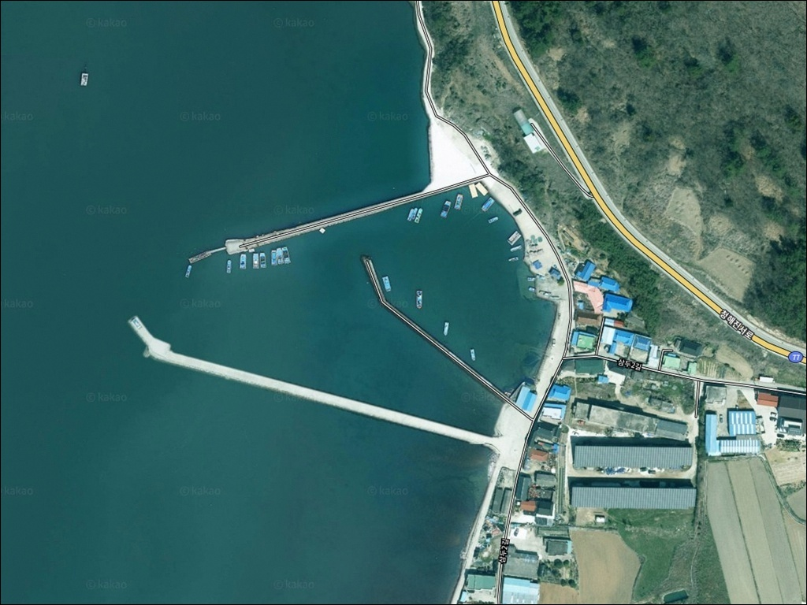
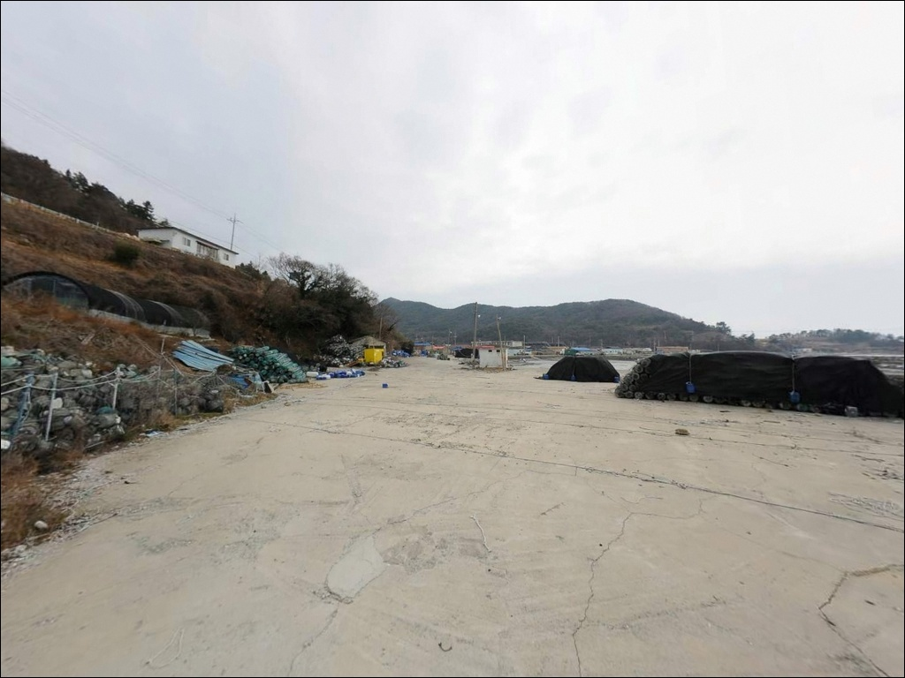
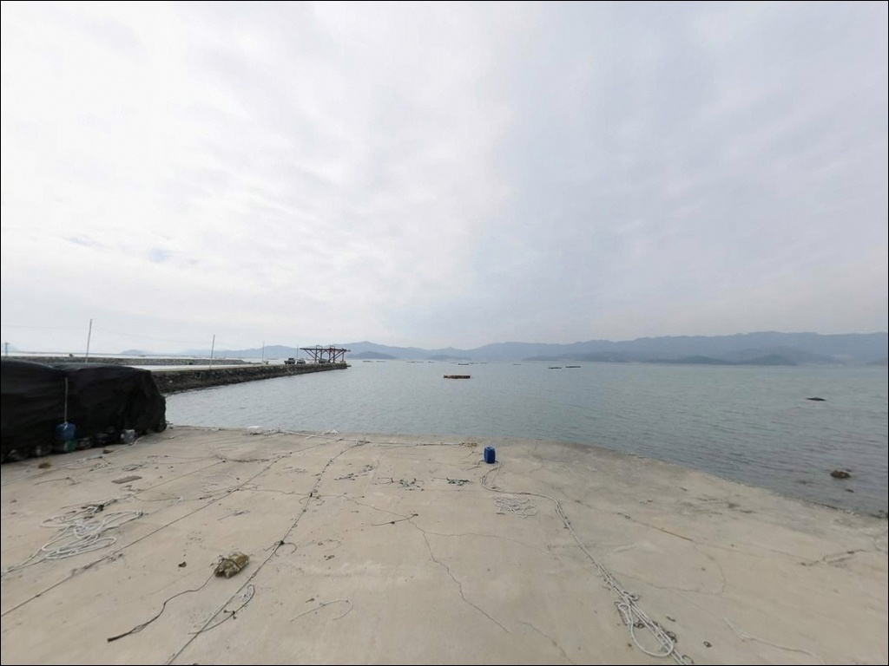
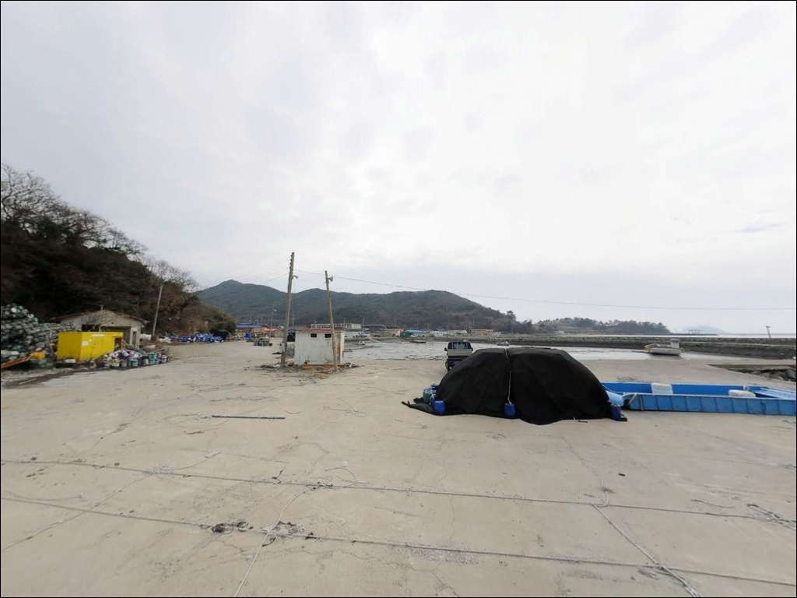
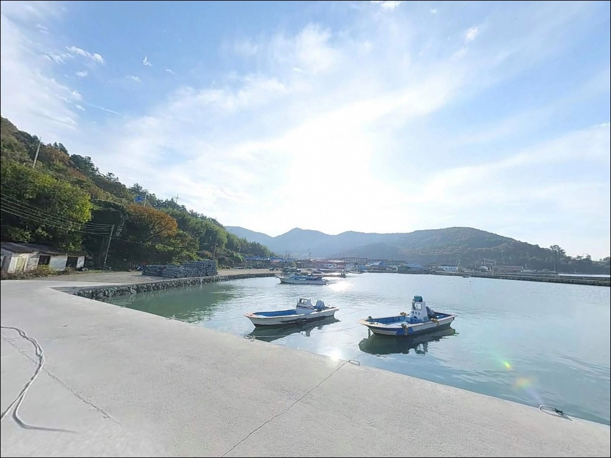
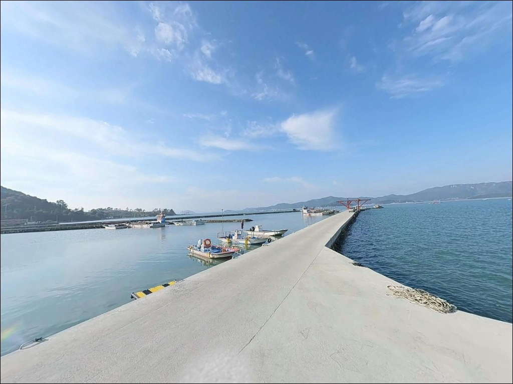
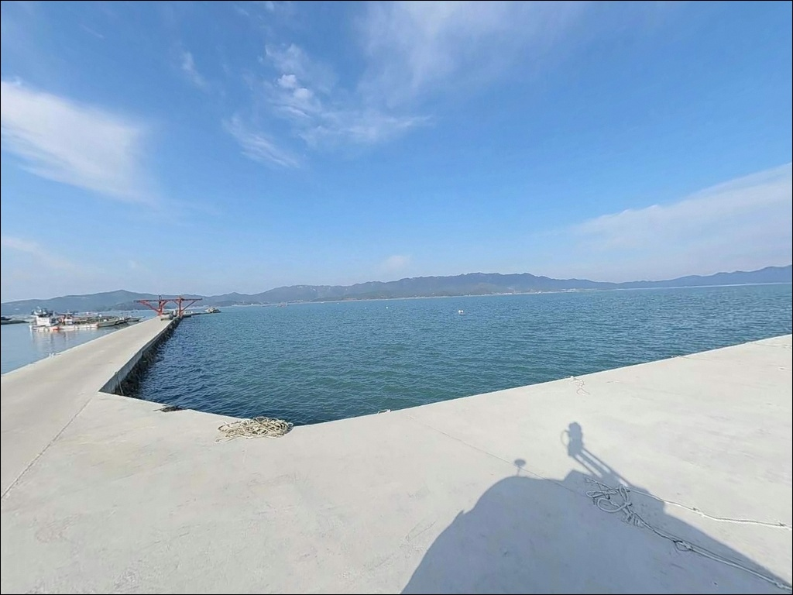
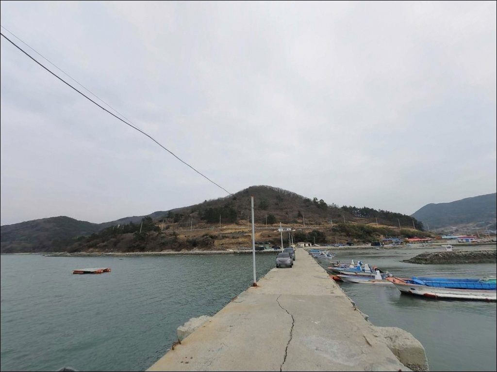
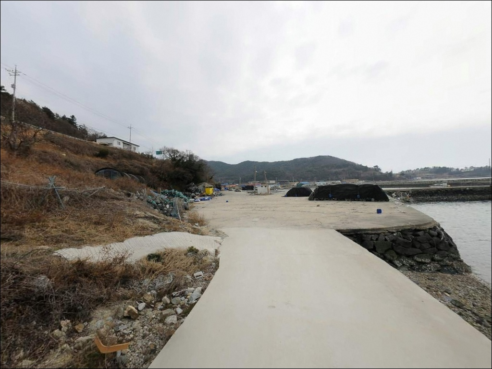

삼두리방파제, 전남 완도군 여유롭게 시간 보내기 좋은 바다 차박 낚시 명소
이 페이지에는 광고(제휴 링크 포함)가 있으며, 광고 링크를 통해 구매하면 운영자가 판매 수익 또는 수수료를 받을 수 있습니다. 포인트 사진: 카카오맵 스카이뷰·로드뷰. 이 페이지의 지도·사진 이미지는 카카오맵의 실제 서비스 이미지와 다를 수 있습니다.


포인트 안내
삼두리방파제
전남 완도군 군외면 삼두리 732-3
삼두리방파제를 물때 확인 없이 찾아가면
내만 조류가 멈춘 정조 시간대와 겹쳐
낚시 자체가 무기력해집니다.
이 포인트는 해남 북평면과 마주보는
수로형 내만 구조여서,
조류가 흐르는 타이밍과
그렇지 않은 타이밍의 조과 차이가 큰 편입니다.
완도 본도 북서쪽, 군외면 삼두리에 자리한
이 방파제는 완도대교 방면 해역과
해남 북평면 사이 해협을 끼고 있는
조용한 내만형 방파제 포인트입니다.
낚시 전문 포인트로 널리 알려진 곳은 아니지만,
완도 연안 방파제 특유의 어종 다양성과
외해 직격이 없는 안정된 환경이
이 포인트를 찾아볼 이유가 됩니다.
이 글은 삼두리방파제의
진입 동선, 차박 여건, 지형 기반 낚시 조건,
낚시 스타일별 공략 방향에 집중합니다.
조황 단정이나 특정 어종 보장은
이 글의 범위에 포함되지 않습니다.

1. 진입 동선과 포인트 접근 여건
삼두리방파제는 완도대교를 기점으로
해남 북평면 방면에서 접근하거나,
완도읍에서 군외면 방면 지방도를 이용하는
두 가지 진입 경로가 있습니다.
완도대교를 통해 해남 북평면 쪽에서 들어오면
거리상 더 가까운 편입니다.
방파제까지는 마을 안쪽 소로를 통해 연결됩니다.
포장 상태는 갖춰져 있지만
도로 폭이 좁은 구간이 포함된
어촌 마을 수준의 진입로입니다.
소형 또는 일반 중형 차량 기준으로는
접근이 무난한 편이며,
대형 SUV나 캠핑카는
출발 전 위성지도로 진입로 폭과
회차 가능 여부를 먼저 확인하는 것이 안전합니다.
주차는 방파제 초입 공터 또는
마을 포구 주변 여유 공간을 활용하는 구조입니다.
어선 작업 공간과 겹치지 않는 자리를
현장에서 먼저 확인하는 것이 기본입니다.
진입로가 좁은 마을 어항에서는
출발 전 위성지도로 회차 가능 여부를 확인하는 것이
방문 성패를 가릅니다.

2. 차박 환경과 야간 체류 여건
삼두리는 민가 밀집도가 낮은 소규모 어촌 마을입니다.
야간 차량 통행이 거의 없고
주변이 조용한 편이어서
낚시를 마치고 자리를 지키는
대기형 차박에는 크게 불편하지 않은 환경입니다.
다만 이른 새벽 어민 조업 활동이 시작될 수 있어
완전한 정적을 기대하기는 어렵습니다.
방파제 끝단 쪽은 가로등이 없는 편이어서
개인 조명 장비는 반드시 챙겨야 합니다.
해남 북평면과 마주보는 해협 구조여서
외해에 직접 노출된 포인트에 비해
바람과 파도 영향은 상대적으로 적은 편이지만,
수로 방향 바람은 계절에 따라 체감하는 경우가 있습니다.
장기 체류보다는 낚시 후 간단히 머무는
대기형 차박 활용이 현실적인 포인트입니다.
주차 공간이 어선 작업 공간과 인접해 있어,
차박을 메인 목적으로 삼기에는
현장 도착 후 주차 가능 자리를 먼저 확인하고
체류 여부를 결정하는 것이 기본 절차입니다.


3. 주변 편의시설 및 인프라 현황
삼두리 방파제 인근에서 도보 거리 편의시설은
기대하기 어렵습니다.
군외면 면소재지인 원동리 방면으로 이동하면
GS25와 CU 편의점이 확인됩니다.
원동리까지는 차로 이동해야 하는 거리여서,
식수, 얼음, 낚시 소품은
출발 전에 모두 준비하는 것이 기본입니다.
삼두리 마을 내에는 주유소가 한 곳 확인됩니다.
장거리 이동 후 도착하는 경우라면
연료 여유를 미리 확인하고 출발하는 편이 안전합니다.
낚시 전문 장비점은 완도읍까지 이동해야 하는 거리여서,
소모성 채비나 여분 봉돌은
출발 전 충분히 챙기는 것이
현장에서 낭패를 막는 기본 준비입니다.

4. 방문 전 반드시 챙겨야 할 준비사항
삼두리방파제 방문 전 가장 먼저 확인할 것은
물때입니다.
내만 수로형 구조 특성상
조류 흐름이 살아나는 타이밍에
방파제 끝단이 제 역할을 합니다.
바다타임에서 군외면 일대 물때를 확인하고,
만조 전후 2시간 이내를
입장 기준으로 잡는 것이 기본 전략입니다.
암반과 모래가 혼합된 바닥 구조여서
채비 밑걸림이 생길 수 있습니다.
여분 봉돌, 도래, 목줄은 넉넉하게 준비하고,
방파제 주변 김양식 시설 위치를
현장에서 먼저 파악해
캐스팅 방향이 어업 시설과
겹치지 않도록 확인하는 것이 기본 매너입니다.
마을 어항이므로 어선 입출항 구간에서는
낚시를 자제하는 것이 기본입니다.
야간 낚시 시에는 헤드랜턴과 구명조끼를
반드시 갖추고 방파제 끝단에 진입해야 합니다.
기상 변화가 빠른 완도 해역 특성상
기상청 예보는 당일 아침 한 번 더 확인하는 것이
포인트 낭비를 막는 조건입니다.

5. 수로를 품은 내만형 방파제, 지형 기반 낚시 여건 분석
삼두리방파제는 해남 북평면과
마주보는 수로 구간에 놓인 구조입니다.
외해 직격이 없는 내만형이지만,
해협 형태의 수로가 조류를 일정하게 소통시키는 편이어서
조류 타이밍에 맞춘 공략이
이 포인트의 핵심 판단 기준이 됩니다.
방파제 길이는 약 78m 수준이며,
끝단 방향의 수심이 5~8m로 일정한 편입니다.
바닥은 암반과 모래가 혼합된 구조로,
방파제 벽면을 따라 볼락류가 서식하기 좋은
은신처 조건을 갖추고 있습니다.
방파제 끝단 외항 방향은
수심이 안정되는 만조 전후를 노리는 것이
원투낚시 자리 선택의 기본 기준입니다.
내만형 구조여서 강한 외해 파도 영향은 적지만,
수로 방향에서 들어오는 바람은
계절에 따라 체감하는 경우가 있습니다.
방파제 방향을 기준으로
바람이 덜 드는 쪽 자리를 먼저 확인하는 것이
야간 낚시 시 중요합니다.
출조 전 삼두리방파제 일대 최신 조황은
반드시 검색해 보시기 바랍니다.


6. 삼두리방파제에 어울리는 낚시 스타일
이 포인트에서 가장 무난하게 운용되는 방식은
원투낚시입니다.
내만 수로 구간의 평탄한 수심과
암반·모래 혼합 바닥 구조는
방파제 끝단 외항 방향으로
채비를 멀리 보내 바닥층을 노리는 방식과
잘 맞는 지형 조건입니다.
도다리나 붕장어를 기대해볼 수 있는
저질 환경을 갖추고 있습니다.
릴찌낚시도 시도해볼 만합니다.
방파제 끝단에서 외항 방향으로
조류 흐름을 따라 흘리는 방식이 이 구조에 맞고,
감성돔, 숭어 등을 기대해볼 수 있는
지형 조건을 갖추고 있습니다.
조류 소통이 생기는 만조 전후 시간대를
집중 공략하는 것이 기본 전략입니다.
볼락 라이트게임도 이 포인트와 잘 어울립니다.
방파제 벽면과 테트라포드 주변 암초대는
볼락이 서식하기 좋은 조건을 갖추고 있습니다.
야간에 소형 지그헤드 채비로
벽면을 따라 천천히 탐색하는 방식이 유효합니다.
에깅은 완도 인근 해역이 4월부터
갑오징어 시즌이 열리는 편이어서,
시즌 중 방파제 끝단 외항 방향으로
에깅 채비를 운용하는 것도 선택지입니다.

7. 대안 포인트와 플랜 B 동선
삼두리방파제 여건이 기대에 못 미칠 때
가장 가까운 대안은
갈문리방파제입니다.
약 2km 거리에 위치하며
비슷한 방파제 구조여서
물때와 바람 조건이 같은 날
묶어서 탐색하기 좋은 동선입니다.
갈문리에서 조금 더 이동하면
칠암각 갯바위가 있습니다.
약 2.1km 거리로,
갯바위 낚시를 선호하는 경우
이쪽으로 이동하면 지형 변화와
다른 어종 구성을 기대해볼 수 있습니다.
방파제 중심에서 갯바위 쪽으로
포인트를 전환하는 동선으로 활용하기 좋습니다.
군외면 면소재지 원동리의
원동선착장은 편의점이 인접해 있고
접안시설이 갖춰진 곳입니다.
보급을 겸해 이동하기 좋은 대안이며,
차박 공간이 부족하다고 판단될 때도
원동리 방면으로 이동하면
주차와 편의시설 여건이 개선되는 편입니다.

조용한 내만에서 채비를 펴는 것,
그게 삼두리방파제를 찾는 이유입니다
삼두리방파제는 낚시 전문 포인트로
이름이 알려진 곳은 아닙니다.
하지만 완도 연안 방파제 특유의 어종 다양성과
조용하고 한적한 내만 환경은
원투낚시나 릴찌낚시를 즐기는 낚시인에게
충분히 매력적인 조건입니다.
물때를 맞춰 만조 전후에 방파제 끝단을 노린다면,
기대 이상의 자리를 만날 수 있는 구조를 갖추고 있습니다.
반면 완전 자급 조건과 좁은 진입로는
처음 방문하는 낚시인에게 변수가 됩니다.
출발 전 물때·진입로·채비 준비
이 세 가지를 갖추고 간다면,
갈문리방파제나 칠암각 갯바위와 묶어
군외면 권역을 하루에 돌아보는
효율적인 출조가 가능합니다.
낚시 후 조용한 내만 옆에 차를 세우고
밤을 보내는 차박 여행자라면,
주차 공간 확인만 미리 해두면
완도 북서쪽 해안의 한적한 분위기를
온전히 즐길 수 있는 출조가 됩니다.